Drop #51 · June 11, 2026 · 30 min read
On Leif Weatherby's Language Machines
Hey everyone (▰˘◡˘▰)
Today's Drop is a mutant review of Leif Weatherby's Language Machines: Cultural AI and the End of Remainder Humanism, one of the most important books out so far on AI and language. To make sense of Large Language Models, Weatherby goes back to the structuralists, Ferdinand de Saussure above all, and rebuilds their account of signs into a general poetics for the age of automated language.
Suggested listening: at the mercy of the road and the weather - daydream associates
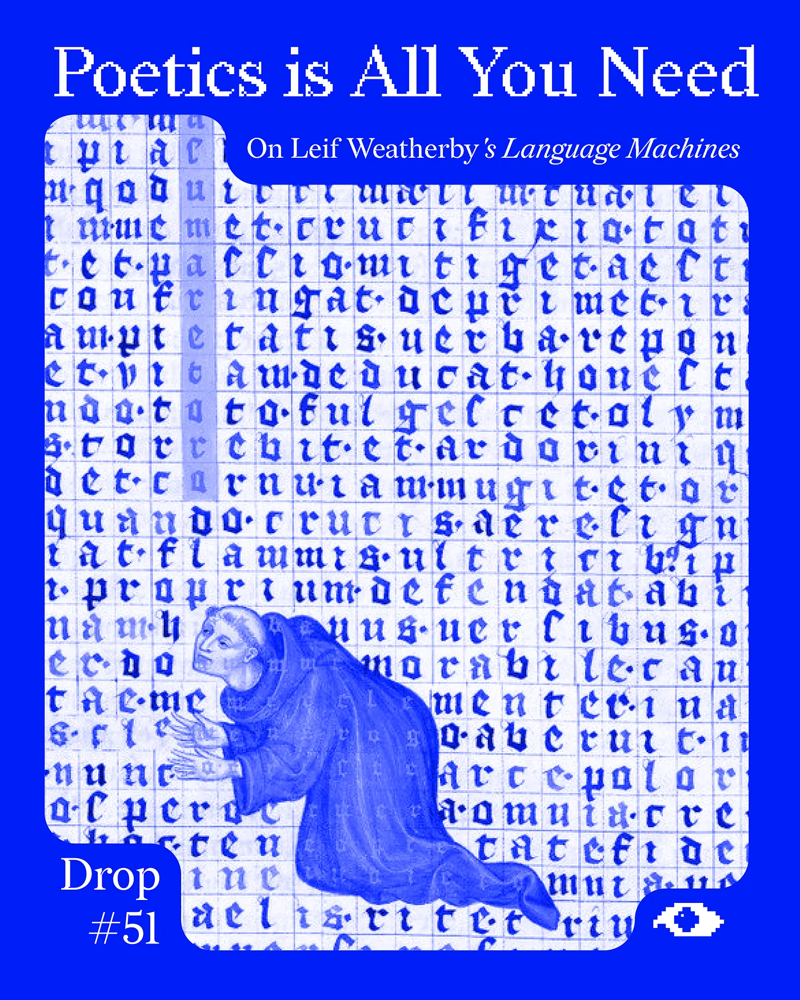
A Formal Introduction
I struggled to find a good incipit for this essay. The plan was to build a narrative wrapper that would walk the reader toward the problems at its core. It didn’t work, so I’m starting with this admission instead of asking my Claude to generate a vapid anecdote to fill the space.
That this is a choice and not a default is itself the point. For twenty-six euros a month, I have at my disposal a system that generates human language well enough to pass for my own English, probably better. Language has entered “the age of its algorithmic reproducibility,” as Leif Weatherby puts it in the opening of Language Machines, so that “the human ability to speak can no longer define our singularity.” That first line sets up one of the most pressing problems facing philosophy, critical thinking, and the humanities at large. Language has been pried loose from cognition, scaffolded inside machines that produce meaning, and released into the world. The people who have spent their lives theorising language, communication, and meaning suddenly find themselves at the front of the problem this invention carries inside it. Beyond the narrow remit of the enterprise known as AI Ethics, I think this is where a real program for what used to be called Digital Humanities, and what Nina Beguš has recently rebranded Artificial Humanities, can begin.
A few of the directions it might take:
How do we put AI interpretability, the technical project of reading what goes on inside these models, into dialogue with the interpretive depth of the humanities?
How do these mechanisms get put to work in specific products and interfaces? What kind of relations form in this mode of human-computer interaction, and how do we design protocols that balance the new cognitive and affective load of synthetic language systems?
Which design patterns do these studies unlock? How do we rearrange knowledge systems, interfaces, and affordances to pluralise the experience of playing with a language model and open new cultural assemblages?
Or, to paraphrase Evgeny Morozov’s point, how do we make possible forms of worldmaking with AI that move beyond the capitalist imaginary and its business model? How do we cultivate a baroque ecosystem, a pluriverse of uses that the market would call inefficient, but that can open new forms of life and paths of coexistence?
Far from a purely theoretical exercise, the wager is to take an active part in shaping these machines, rather than leaving their future to monopolistic billionaires bent on proletarianising the middle class.
This essay is an early reconnaissance into some core ideas that will occupy me for the next three years, the same ones at the core of my PhD project, awarded a scholarship from the DREST program starting last November under the working title “Endless Conversations”. And, to not be forgotten, nCHANT #02 puts the problem of AI personhood at its centre, working it through our readers’ contributions and a great lineup of writers, out early fall.
The Endless Conversations have just started.
The Problem with Remainder Humanism
We begin from the most fundamental dimension, language, in a corpo a corpo with Leif Weatherby’s Language Machines: Cultural AI and the End of Remainder Humanism.
The book addresses the theoretical consequences produced by the diffusion of large language models into general public use, since the release of ChatGPT in November 2022.
This transformation caught the humanities in an uncomfortable position. The dominant response among theorists was deflationary: an insistence that whatever these systems were doing, it was not language in any genuine sense, meaningless and certainly not intelligence. The most influential formulation of this stance came in the widely circulated paper “On the Dangers of Stochastic Parrots“, authored by Emily M. Bender, Timnit Gebru, Angelina McMillan-Major, and a mysterious Shmargaret Shmitchell, which argued that large language models are essentially engines for “haphazardly stitching together sequences of linguistic forms” from their training data, without any access to intent, or the world those forms refer to.
At the time of its release, the paper made an immediate impact. It cost Timnit Gebru her job at Google and offered an early sign that corporate commitments to ‘ethical AI’ would dim quickly once the technology reached the mainstream.
For all its force in naming the environmental, financial, and ethical costs of the LLM industrial complex, its central claim, that these systems are mere “parrots” producing language without understanding, came to feel anachronistic as their capacities advanced across the years.
The stochastic-parrots camp was not alone. The media-darling philosopher Luciano Floridi captures the same intuition when he speaks of these systems as instances of “zero intelligence”: machines whose remarkable performance doesn’t prove that intelligence, in any cognitive or semantic sense, is what is at work in them.
It must be said that against the nauseating, promotional discourse of industry actors and the valuation pressures of the markets that sustain them, this deflationary stance has supplied a necessary corrective, sustaining the conceptual distinction between fluency and understanding, and refusing to collapse statistical regularity into semantic content.
Yet around this corrective role, the positions of many theorists have settled into a posture that Weatherby critically names “remainder humanism”: a “distorting focus on the line between human and machine” that withdraws “a human core from the synthetic generator” and locates meaning in a distant territory that computation has so far failed to occupy. The diagnosis is meant to cut across otherwise incompatible positions — Chomsky’s appeal to an innate syntactic faculty, Bender’s argument that synthetic text is meaningless because it lacks communicative intent, and the existential-risk discourse (exemplified by Silicon Valley-dear thinker Nick Bostrom) — all of which, for Weatherby, share the same theoretical reflex: a sentimental semantics that “siloes meaning where we hope, wish, and want it to come from”.
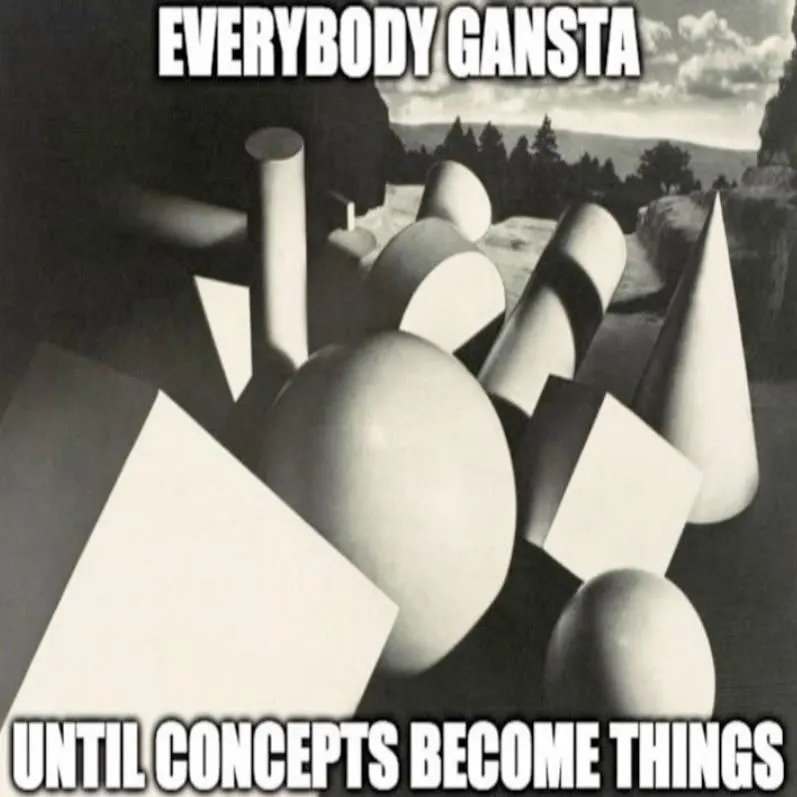
Weatherby’s critique of remainder humanism rests on a longer historical diagnosis, presented in the book’s first chapter titled “How the Humanities Lost Language.” The retreat of humanistic inquiry from the technical study of language, he argues, opened the field to cognitive and data sciences, which proceeded to claim language as their own disciplinary object. Recovering it requires confronting three competing theoretical frameworks that have organized the modern study of language.
The first is what Weatherby calls the “Syntax View,” the rationalist programme associated above all with Noam Chomsky, which defines language as an innate biological capacity of the human brain — a “narrow faculty” organised “like the genetic code — hierarchical, generative, recursive, and virtually limitless with respect to its scope of expression”. From this position, large language models can only appear as “a lumbering statistical engine for pattern matching”, producing artefacts rather than language proper. As Weatherby summarises Chomsky’s position, no scan of a corpus, however large, can answer a “why” question about language: it can describe statistical regularities in usage but cannot explain why grammatical structures take the hierarchical and recursive form they do, nor why some sequences are accepted as well-formed, and others rejected.
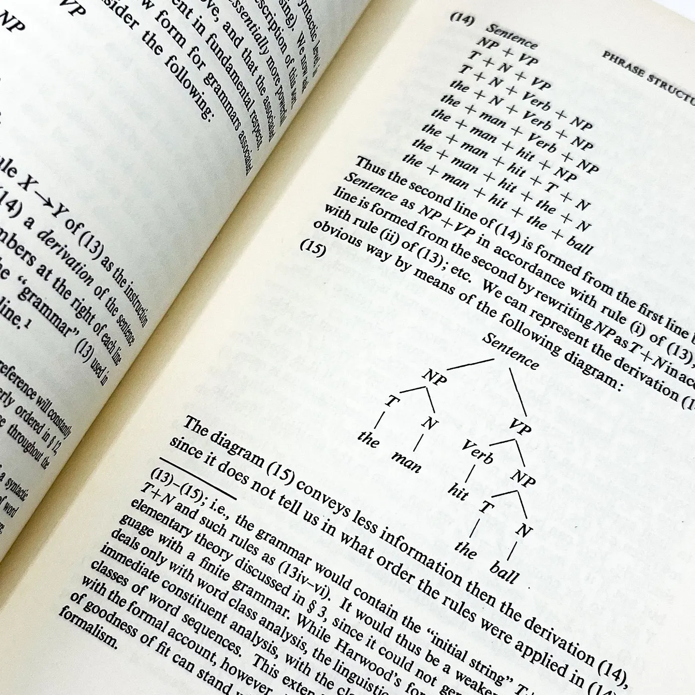
At the opposite of the “Syntax View” stands the “Statistics View”, the empiricist approach dominant in modern natural language processing. This view relies on what Weatherby calls the distributional hypothesis, namely the idea that meaning can be extracted from the statistical regularities of a sufficiently large corpus. encapsulated by the dictum of the British linguist J. R. Firth that “you shall know a word by the company it keeps”. In this perspective, “data have overcome understanding and grammar in producing something like natural language”.
This data-driven approach has dominated artificial intelligence and deep learning since the late 1990s, and it underwrites the impressive performance of contemporary language models such as the GPT family. Yet it has also encouraged an attitude that dismisses theoretical reflection on language altogether in favour of a pure data empiricism — a spirit captured in the much-quoted remark, cited by Weatherby, of the IBM speech-recognition pioneer Robert Mercer: “every time I fire a linguist, the performance of the speech recognizer goes up”. Theoretical knowledge of language, in this view, is an obstacle to engineering it.
If the cognitive and data sciences claimed language for themselves over the second half of the twentieth century, the humanities, on Weatherby’s account, did much to facilitate the handover. The decisive turn is represented by French post-structuralism, and the work of Jacques Derrida above all. It is in Derrida’s critique of Ferdinand de Saussure, Weatherby argues, that we can trace the disciplinary drift through which the humanities ceded the technical study of language to other fields.
Saussure (1857–1913) was the Swiss linguist whose posthumous Course in General Linguistics (1916) furnished modern structuralism with its founding premises: that the linguistic sign joins two inseparable faces, a signifier and a signified. The signifier is the acoustic image, the sensible form of the sign, the string of sounds or letters we utter or perceive, e.g., the phonetic sequence /’triː/. The signified is the concept that form calls up, the mental idea of “tree”, and not the actual tree out in the world. The bond between the two is arbitrary, held in place by convention alone, with no natural resemblance between them, which is why other languages pair the same concept with wholly different signifiers (arbre, albero, Baum). Neither face has positive content of its own: the signifier /’triː/ is identifiable because it sounds different from /’friː/ or /’θriː/, and the signified “tree” takes shape by contrast with neighbouring concepts like “bush” or “shrub”.
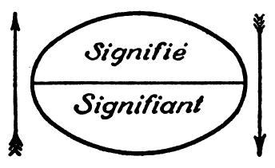
Signs acquire their meaning, then, through their differential relations within a system: the langue that underwrites every individual act of speech, so meaning lives in the network of contrasts rather than in any bond between a word and a thing. Because that relational model travelled so far beyond linguistics, supplying the template Lévi-Strauss, Barthes, and others extended to myth, kinship, and culture, to critique Saussure implied a polemic against the structuralist method as a whole. This is what makes the target of Derrida’s critique so consequential.
For Jacques Derrida, Saussure’s analysis is built on the metaphysics of presence, which privileges speech over writing and casts writing as a secondary supplement. Speech appears to deliver the speaker’s meaning live and intact, present to itself in the moment of utterance, while writing comes after, in the speaker’s absence, a derivative trace of something held to be more original. This same assumption props up any system of signs, what Weatherby, following Georges Bataille, calls a “restricted economy”: a bounded set whose terms seem to settle their accounts internally. For Derrida, such a system can only be grasped as part of a wider “general economy” that exceeds and conditions it, since each term draws its sense from the play of differences running through the whole chain. To recall the formulation of Différance: “every concept is inscribed in a chain or in a system within which it refers to the other, to other concepts, by means of the systematic play of differences”.
Weatherby’s aim is not to refute Derrida’s critique, for which he is in any case too brief, but to set it aside as superfluous for the kind of semiology he wants to mobilise: one trained on the restricted economy of computational language as it is scaffolded in LLMs. The trouble with deconstruction, on this account, is that it blunted the analytical instruments of structuralist linguistics and pulled the attention of literary scholars away from the concrete object they were uniquely equipped to study, language as a system of signs. Pursuing the general economy meant treating any bounded sign-system as a philosophical naivety to be dismantled. Once the restricted economy became an object of suspicion rather than analysis, the humanities loosened their grip on the technical study of language and let the cognitive and data sciences take hold of it.
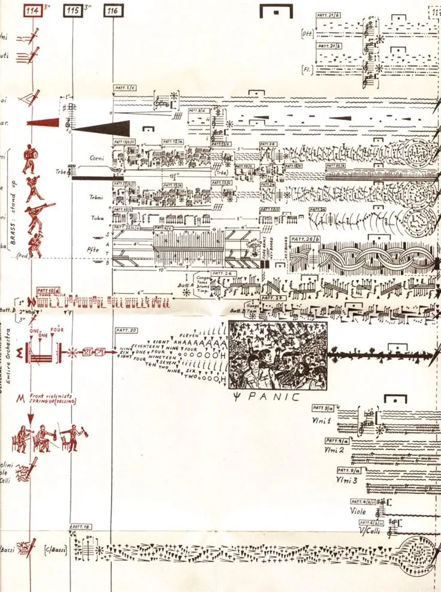
The arrival of automated language, he argues, reverses the priorities that sent the humanities away from their object. An LLM is a restricted economy made operational, a bounded system whose signs acquire their values through their relations to one another. So the call that closes the chapter is also a provocation: in the age of automated language, it is time to return to structuralism and put its analytical tools back to work.
Towards a Computational Semiotics
Weatherby then turns to the founding figure of Structuralism, Saussure, and his notion of value. What we ordinarily call meaning corresponds, on Saussure’s account, to the value that a sign acquires within the system of all other signs, and this value is entirely differential: meaning is generated by the position each term occupies within a system of oppositions that is itself constantly shifting through time. Weatherby names this the differential hypothesis, in deliberate counterpoint to the distributional hypothesis of the statistics view. If both locate meaning in inter-word relations rather than in reference, they differ on a decisive point: where distributionalism holds that meaning can be inferred inductively from the company a word keeps in a corpus, Saussure’s claim is global in the sense that the system precedes and conditions its local instances, rather than the reverse, thus generating meaning.
Structuralism provides a framework to treat language as an autonomous cultural system that operates independently of human cognition, intent, or biological brains and that exists in the crucible of language and computation, as famously stated by Saussure himself in his classic:
We shall find nothing simple [in language] regardless of approach… Language… is a type of algebra consisting solely of complex terms
Such a model of language is impersonal and transindividual, circulating through culture without depending on any speaker’s intent or biological brain. It is, in the sense Reza Negarestani gives the term, an inhuman system, where inhuman names not the nonhuman or some alien Outside, but an order of meaning that no longer takes the speaking subject as its source.
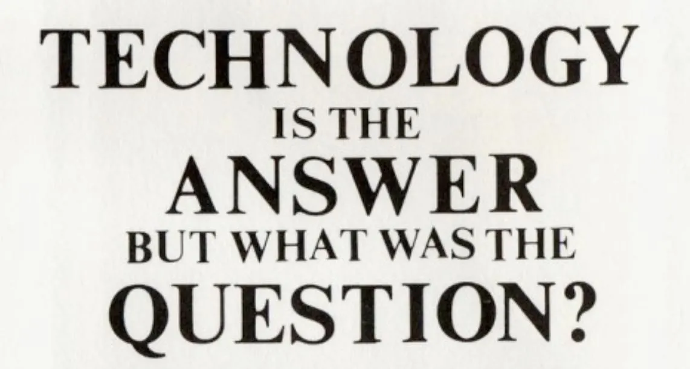
For Weatherby, the generative matrix of meaning described by structuralist linguistics is the theoretical framework best suited to account for the actual existence of large language models — that is, computational artefacts capable of generating fluent and meaningful text without any contact with the world they appear to talk about, and thus, no subjectivity interfacing with the external reality.
With no subject in place, what Weatherby names the ladder of reference falls away, and what falls with it is the dominant metaphysical assumption of twentieth-century philosophy of language.
The ladder of reference describes the idea that the primary and most fundamental function of language is to be a reference to the physical world. On this view, language is first and foremost an instrument of world-representation: the relation between a sign and its external referent provides the bedrock upon which all other linguistic features are subsequently constructed. Anything that is not directly referential — syntax, poetics, rhetoric, ideology, even iconicity — is treated as secondary or derivative. Weatherby assigns a majority share of responsibility for this picture to a specific intellectual genealogy: the migration of logical positivism from interwar Vienna to the postwar American academy, and in particular to Rudolf Carnap, who arrived at the University of Chicago in the mid-1930s carrying with him Gottlob Frege’s distinction between Sinn (sense) and Bedeutung (commonly translated as “reference” but, as Weatherby notes, more literally rendered as “meaning”). For the Vienna School, Sinn — the messy historical contingencies of natural language — was the “slag of historical languages,” to be cleared away in favour of a logically reconstructed referential semantics fit for the natural sciences.
Weatherby argues that contemporary large language models provide a definitive empirical refutation of this hierarchy. Because these models generate fluent and meaningful text without direct sensory grounding or an intentional mind to point at the world, they isolate the generative capacity of language from the act of reference. LLMs, for him, demonstrate that reference is only a special semiotic function or an ancillary achievement that precipitates from a more fundamental generative matrix. These machines show that we start afloat within a web of signs and that grounding is derivative. More complex features like poetics and ideology could precede and govern reference, reversing the order inherited from the logical-positivist tradition.
An interesting objection that could be raised against Weatherby’s argument is the idea that LLMs inherit the priority of reference from the human-produced corpora on which they are trained. In this view, the model’s outputs appear referential because the training texts were written by humans whose words referred to things in the world, and the model is simply parasitic on that prior referential work, like in Mandelkern and Linzen’s recent paper. As just mentioned, Weatherby, however, structures his system by removing reference and proposing a generative matrix. What that matrix is, and how it generates meaning without reference, is the question that the author takes up in the second half of the book, where the generative dimension of language is given a name and a precise mechanism: the poetic function, and its technical realisation in the attention mechanism of the transformer.
Poetics is All You Need
In Chapter 5, Weatherby situates the “general principle of language as a system”, in the realm of poetics, working through Roman Jakobson’s sixfold classification in “Linguistics and Poetics” presented as:
The set (Einstellung) toward the message as such, focus on the message for its own sake, is the poetic function of language.
The decisive move, which Weatherby foregrounds, is Jakobson’s distinction between the poetic and the metalingual function of language: “Poetry and metalanguage, however, are in diametrical opposition to each other: in metalanguage the sequence is used to build an equation, whereas in poetry the equation is used to build a sequence”. The two operate as inverses. Metalanguage is the operation by which language speaks about its own code — “mare is the female of the horse,” is Jakobson’s example — establishing an equivalence between two terms to clarify their semantic content; poetry proceeds from equation to sequence: through mechanisms like rhyme, and rhythm, it generates formal equivalences, and from these equivalences a sequence unfolds. Poetics, in this technical sense, Weatherby reminds us, echoes the Greek etymology of poiesis: it is the generative dimension of language in which the message becomes productive of itself.
What this means for large language models becomes clear once we focus on the mechanism that drives text generation in transformers and how the attention mechanism, presented in the breakthrough paper Attention is All You Need, differs from the traditional vector semantics.
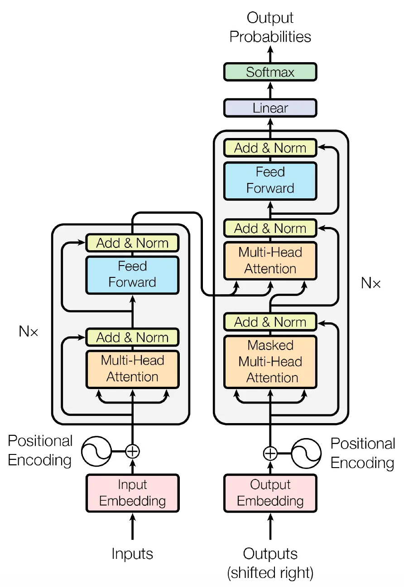
Vector semantics is a form of word embedding that lays out semantic dependencies in a continuous vector space. In static vector semantics, meaning is represented by coordinates defined by a word’s vector, allowing for simple algebraic operations such as subtracting the vector for man from king and adding woman to find the vector closest to queen. While these earlier models were able to capture paradigms — vertical arrays of synonymous or related words — they failed to produce meaningful syntagms on their own. Large language models move beyond this limitation by adopting the transformer architecture, which injects far higher levels of redundancy and uses the attention mechanism to generate language sequentially rather than merely to retrieve similarities. The transformer connects all positions in a sequence through a constant number of operations, allowing for a much deeper capture of structural relevance.
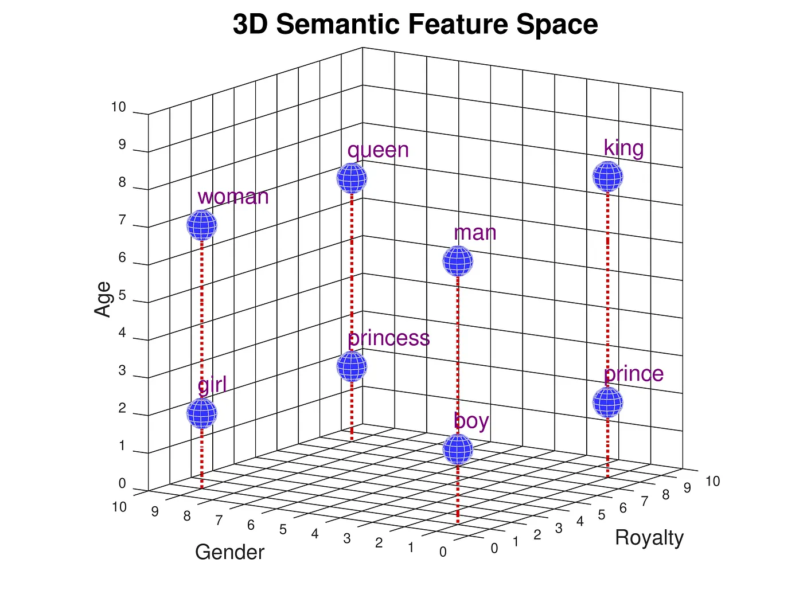
The mechanism runs through three matrices — queries, keys, and values (QKV) — which together map a query and a set of key-value pairs to an output, computed as a weighted sum of the values. The weight assigned to each value is determined by a compatibility function between the query and its corresponding key. Unlike traditional databases, where keys are manually assigned metadata, in an LLM, the QKV matrices are learned during pretraining, so that the model effectively discovers how each element in an input-sequence conditions the meaning of every other. The implementation of multi-head attention further refines this process by allowing the model to attend simultaneously to information from different representation subspaces at different positions, preventing the averaging effect of a single attention head from obscuring structural relevance.
What this architecture realises, on Weatherby’s reading, is a form of internal recursion, which he is careful to distinguish from the recursive mechanism that Chomsky locates in the speaker’s head. The recursion at work in LLMs takes place not before but within externalisation: each token, once produced, conditions every token that follows, and the system has no other resource for choosing the next word than the relations it can compute between what it has just generated and the linguistic field it has learned. Weatherby’s contribution is to make visible what the attention mechanism in fact does at the level of form. It is a form of internal recursion, operationalised through numerical weights for each token in the sequence, indicating how much it ought to attend to each other.
This property actualizes the poetic function described by Jakobson: the orientation of a message toward its own form, the dimension of language in which the sequence is generated by the play of internal equivalences without referencing anything outside it. As Weatherby formulates the point: “by passing sequences through self-attention in this fashion, LLMs learn how the message relates to itself. It is only from this poetic basis — in which words similar in relevance are drawn together in meaning — that the other functions, like reference, precipitate. The “LLM grounds all other functions in the poetic”, states Weatherby. At this juncture, he articulates the central image of his proposal: the poetic heat map.
We can now call the value matrix in the model a poetic heat map. […] From the heat map comes the sequence. The next word is drawn from a pool of words that show up hot, like on a weather map. And where word embedding gave paradigms, the heat map stores much more redundancy, effectively choosing the next word based on semantics, intralinguistic context, and task specificity (set by fine-tuning and particularized by the prompt). These internal relations of language—the model’s compression of the vocabulary as valued by the attention heads—instantiate the poetic function, and this enables sequential generation of meaning by means of probability. As you put one word after the next, equivalences appear, drawing on and remixing levels of redundancy of which Shannon never dreamed.
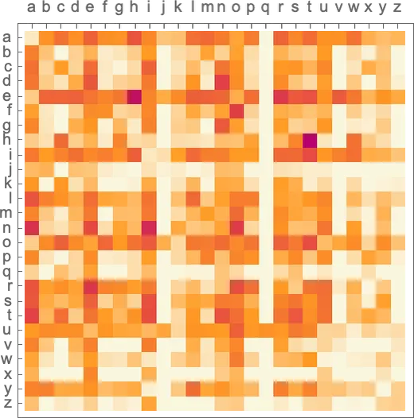
The poetic heat map, in this sense, is the technical achievement around which the entire book turns. It is what allows Weatherby to claim that LLMs do not merely process language but instantiate the differential structure that Saussure had hypothesised and that the structuralist tradition had been unable to demonstrate without recourse to introspection or to a speaking subject. This is where language and computation converge, as they “share form because both are discovery processes”. The theoretical proposal of the author then is to overcome the remainder humanism that he diagnosed in many humanities studies on the topic and to stop the vigilance attitude that keeps the boundary of human language sacred.
The goal for him is instead the articulation of a general poetics, which begins in this encounter “between the generativity of computation and the generativity of language”, and moves towards studying the “proliferation of automated culture of this sort, the semiology of multimodal AI, we need a general poetics”. Weatherby thus updates the generative matrix of structuralism for the present moment, refashioning it into an analytical instrument; what remains to be seen is the use to which he believes it should be put.
Default System Language
Yet the question is not […] what if the machines were alive? – but something more radical: what if we are as “dead” as the machines? To pose even this second question seems immediately inadequate: what sense would it be to say that “everything” – human beings and machines, organic and nonorganic matter – is “dead”?
- Mark Fisher, Flatline Constructs
Weatherby’s return to structuralism is not without a political undercurrent that surfaces unambiguously in the sixth and concluding chapter of Language Machines. As Weatherby himself has remarked in a recent interview: “[...] It’s not enough to say that technology is linked with capitalism. How are these machines connected with capitalism? There’s still work to be done.”
Chapter 6 begins by examining the ideological nature of the language machines described thus far. After five chapters in the depth of language structures and the latent space, the sixth chapter and the conclusion seem to move towards the surface, where the manifest effects of these new systems emerge in society and in aesthetics, entering dialogue with several authors already at work on these themes.
I want to take up some of these intuitions and suggest where they might lead the general poetics he has been building.
The central claim is that large language models’ current poetics is ideological: these systems generate prepatterned outputs, meaning to form a packaged semantics. These “prepackaged forms” define the output of LLMs, from text to image, bringing them often close to the category of kitsch, as has already been argued by the design theorist Silvio Lorusso. The kitsch is a “shortcut” towards a certain aesthetic ideal that fails, however, to reach the same intensity of the original: “a failed imitation”, as Tommaso Labranca defined the sub-category of trash.
This claim softens the universalising register in which Weatherby occasionally discusses the heat map. The structures these models surface are not structures of language in the abstract but of language as actually used by the specific community whose textual production constitutes the training corpus (e.g., English-language web text of a certain period, filtered through specific online platforms). Here, the corpus-specificity of the model is reframed as a virtue. Weatherby’s point is to maintain a productive, semiotic attitude towards these generative outputs, considering them as a “surface effect”, as Gilles Deleuze would say, of the ideological magma that our language matrix is. Weatherby mobilizes this Foucauldian description of ideology, which oddly resonates with his image of the poetic heat map:
[Ideology] scans the domain of representations in general; it determines the necessary sequences that appear there; it defines the links that provide its connections; . . . it situates all knowledge in the space of representations, and by scanning that space it formulates the knowledge of the laws that provide its organization. It is in a sense the knowledge of all knowledge
Similarly, Weatherby describes that LLMs produce meaning by clustering tokens together, based on their statistical relevance to the surrounding cluster of ideas. This active assembly is technically governed by the softmax function, which serves as an indexical operator by pushing the probability values of relevant candidates close to 1 while marginalizing irrelevant tokens, and by the subsequent top-k search, then selects from these high-probability candidates to cluster them into a fluid sequence. The move risks looking like an unexpected concession. Having spent the introduction dismantling the stochastic-parrot thesis, the book now characterises their default production as the surfacing of predigested, well-travelled linguistic pathways. Is packaged semantics simply parroting under a more flattering description?
The answer turns on what is repeated and at what scale. The parrot thesis locates repetition at the level of content — the model regurgitates fragments from its corpus — and reads it as a symptom of the machine’s failure to mean. Weatherby’s packaged semantics, on the other hand, locates repetition at the level of form: what recurs is the “lawful patterning” of expression itself, the statistical topology of the ways things tend to be said within a given linguistic surround. The diagnostic value of that recurrence is reversed: it indicates not the machine for failing to be human, but the human surround for being already largely machinic under conditions of platform capitalism. This dynamic is illustrated, for instance, by a study made on the vast dataset LAION-5B - broadly used for training models — where researchers found that a substantial percentage of data came from e-commerce platforms like Shopify and similar e-commerce sources.
In early 2025, in the context of one REINCANTAMENTO’s projects, I encapsulated the ideological dimension of automatic langue with the expression Default System Language, inspired by Libby Marrs’s research on default systems design. It was already clear to me then that the linguistic normcore of LLMs exposed something beyond the stochastic mechanisms that regulate their generation. It made manifest that the act of speaking is never singular or individual but belongs to what Deleuze and Guattari called the agencement collectif et machinique, the collective and machinic assemblage.
To enunciate is not to originate a message but to delegate our expression to a messenger, language itself. The Italian semiotician Claudio Paolucci calls the utterance an addition of subtractions: every act of speech selects from a reservoir already in circulation and, in selecting, cuts into the encyclopedia of language. We speak through a stock of formulae, citations, and ideological reflexes that precede us. The first language machines in history rely on the same predigested material we do, even if they process it in a completely different way. Their outputs, then, are not copies or simulations of a missing human original. They are, for both Paolucci and Weatherby, simulacra in Baudrillard’s sense: self-standing manifestations of algorithmically reproducible language.
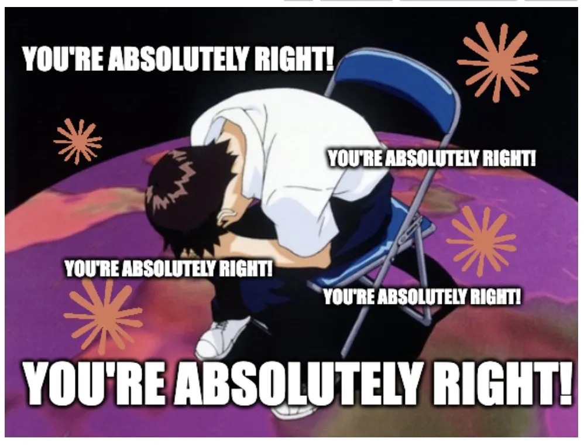
If language is a virus, as Burroughs once put it, then Default System Language is its latest mutation, a strain that no longer needs a human host to replicate. It circulates through captions, emails, posts, and proposals, and the more we read it, the more we write in it, until the median register of the machine becomes the median register of the culture that trained it. This is the loop Weatherby calls the globalisation of the Eliza effect. The original effect, named for Weizenbaum’s 1966 chatbot, was local and personal: a user projecting understanding onto a program that merely reflected their words back at them. What Weatherby describes is that projection raised to the scale of an entire textual ecology, hardened into an underlying cultural condition in which, across most ordinary writing, the line between human and machine output can no longer be reliably drawn.
But do we really believe these simulacra are alive, capable of affect? The creepier suspicion runs the other way: that no one is there at all, and that the order which speaks through us can be made to speak without us. Following Weatherby, we can no longer treat language as a human pole and computation as the alien machinic one that preys on it. Language is, to borrow Lacan’s portmanteau, extimate: at once alien and intimate, internal and external, familiar and foreign. It feels like the inmost medium of my thought, yet it reaches me from outside, from a symbolic order that was in place before me and will outlast me. My interiority is already structured by an exteriority I did not author. To take language back, and to return to structuralism, is to begin again from the extimacy we are all immersed in.
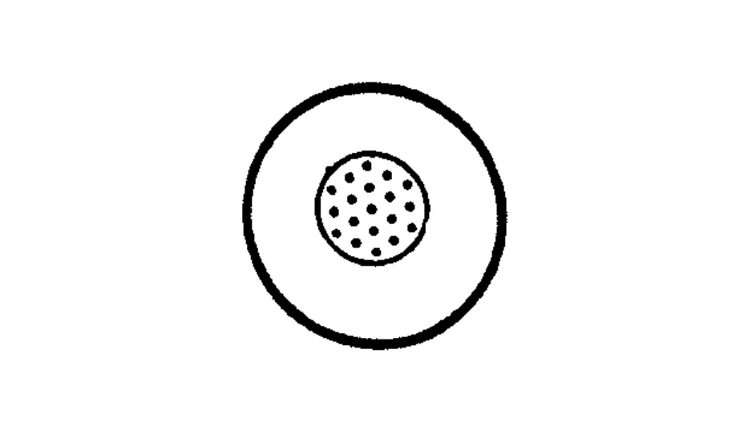
This is the task that a computational semiotics, or what Weatherby calls a general poetics, sets for itself: to read these extimate surfaces closely, and to follow the forms, structures, and abstractions this form of computation brings to light. Such a poetics would refuse both the deflationary reflex that dismisses these systems as mere statistics and the consoling one that smooths their strangeness into a human face. It would keep the strangeness in view, and study how it is built, tuned, and personified, and what attachments and dependencies assemble around it.
The surfaces are animating, and the machines are talking. For those who dare, it is time to pay attention.
References
Baudrillard, J. (1981) Simulacres et simulation, Galilée, Paris (Eng. trans. by S.F. Glaser, Simulacra and Simulation, University of Michigan Press, Ann Arbor 1994).
Bender, E.M., T. Gebru, A. McMillan-Major, and S. Shmitchell (2021) “On the Dangers of Stochastic Parrots: Can Language Models Be Too Big?”, in Conference on Fairness, Accountability, and Transparency (FAccT ‘21), ACM, New York, 14 pages. https://doi.org/10.1145/3442188.3445922
Burroughs, W.S. (1970) The Electronic Revolution, Expanded Media Editions, Göttingen.
Chomsky, N., I. Roberts, and J. Watumull (2023) “The False Promise of ChatGPT”, The New York Times, 8 March. https://www.nytimes.com/2023/03/08/opinion/noam-chomsky-chatgpt-ai.html
Deleuze, G. (1969) Logique du sens, Minuit, Paris (Eng. trans. by M. Lester and C. Stivale, ed. by C.V. Boundas, The Logic of Sense, Columbia University Press, New York 1990).
Derrida, J. (1982) Margins of Philosophy, University of Chicago Press, Chicago.
Disintegrator (2025) “Natural Language (w/ Leif Weatherby)”, Disintegrator, episode 38, 24 September.
Elazar, Y., A. Bhagia, I. Magnusson, A. Ravichander, D. Schwenk, A. Suhr, P. Walsh, D. Groeneveld, L. Soldaini, S. Singh, H. Hajishirzi, N.A. Smith, and J. Dodge (2024) “What’s In My Big Data?”, in Proceedings of the 12th International Conference on Learning Representations (ICLR 2024), Vienna. https://arxiv.org/abs/2310.20707
Firth, J.R. (1957) “A Synopsis of Linguistic Theory, 1930–1955”, in Studies in Linguistic Analysis, Blackwell, Oxford, 1–32.
Floridi, L. (2023) “AI as Agency Without Intelligence: On ChatGPT, Large Language Models, and Other Generative Models”, Philosophy & Technology, 36: 15. https://doi.org/10.1007/s13347-023-00621-y
Foucault, M. (1970) The Order of Things: An Archaeology of the Human Sciences, Pantheon Books, New York.
Jakobson, R. (1960) “Linguistics and Poetics”, in T. Sebeok (ed.), Style in Language, MIT Press, Cambridge MA, 350–377.
Jurafsky, D. and J.H. Martin (2026) Speech and Language Processing: An Introduction to Natural Language Processing, Computational Linguistics, and Speech Recognition, with Language Models, 3rd ed., online manuscript released 6 January 2026. https://web.stanford.edu/~jurafsky/slp3/
Labranca, T. (1994) Andy Warhol era un coatto: Vivere nel trash, Castelvecchi, Roma.
Lacan, J. (1986) Le Séminaire, livre VII: L’éthique de la psychanalyse (1959–1960), ed. by J.-A. Miller, Seuil, Paris (Eng. trans. by D. Porter, The Seminar of Jacques Lacan, Book VII: The Ethics of Psychoanalysis, Routledge, London 1992).
Lorusso, S. (2024) “Deepdreaming Willy Wonka: AI Weird as the New Kitsch”, transcript of a talk given at the Hidden Layers conference, Köln International School of Design, 14 June. https://silviolorusso.com/publication/ai-weird-as-the-new-kitsch/
Mandelkern, M. and T. Linzen (2024) “Do Language Models’ Words Refer?”, Computational Linguistics, 50 (3): 1191–1200. https://doi.org/10.1162/coli_a_00522
Miller, J.-A. (1994) "Extimité", in M. Bracher (ed.), Lacanian Theory of Discourse: Subject, Structure, and Society, trans. F. Massardier-Kenney, New York University Press, New York, 74–87.
Negarestani, R. (2014) “The Labor of the Inhuman, Part I: Human”, e-flux journal, 52. https://www.e-flux.com/journal/52/59920/the-labor-of-the-inhuman-part-i-human/
Paolucci, C. (2025) Nati cyborg: Cosa l’intelligenza artificiale generativa ci dice dell’essere umano, Luca Sossella Editore, Roma.
Saussure, F. de (1916) Cours de linguistique générale, Payot, Paris (Eng. trans. by W. Baskin, Course in General Linguistics, Columbia University Press, New York 2011).
Vaswani, A., N. Shazeer, N. Parmar, J. Uszkoreit, L. Jones, A.N. Gomez, Ł. Kaiser, and I. Polosukhin (2017) “Attention Is All You Need”, in Advances in Neural Information Processing Systems, Curran Associates, 5998–6008. https://arxiv.org/abs/1706.03762
Weatherby, L. (2025) Language Machines: Cultural AI and the End of Remainder Humanism, University of Minnesota Press, Minneapolis.
Weizenbaum, J. (1966) “ELIZA: A Computer Program for the Study of Natural Language Communication between Man and Machine”, Communications of the ACM, 9 (1): 36–45.
Wolfram, S. (2023) What Is ChatGPT Doing... and Why Does It Work?, Wolfram Media, Champaign IL. https://writings.stephenwolfram.com/2023/02/what-is-chatgpt-doing-and-why-does-it-work/